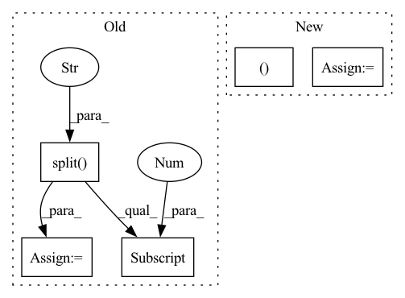

Pattern ID :27155
Before Change
net_G = define_generator(opt).to(device)
// get dummy input
lr_size = tuple(map(int, lr_size.split("x" ) ))
dummy_input_dict = net_G.generate_dummy_input(lr_size)
for key in dummy_input_dict.keys():
dummy_input_dict[key] = dummy_input_dict[key].to(device)
// profile
register(net_G, dummy_input_dict)
gflops, params = profile_model(net_G)
base_utils.log_info("-" * 40)
base_utils.log_info("Super-resolute data from {}x{}x{} to {}x{}x{}".format(
*lr_size, lr_size[0] , lr_size[1]*scale, lr_size[2]*scale))
base_utils.log_info("Parameters (x10^6): {:.3f}".format(params/1e6))
base_utils.log_info("FLOPs (x10^9): {:.3f}".format(gflops))
base_utils.log_info("-" * 40)After Change
gflops_all, params_all = 0, 0
for module_name in gflops_dict.keys():
base_utils.log_info(f"{"-"*40}\nModule: [{module_name}]")
gflops, params = gflops_dict[module_name], params_dict[module_name]
base_utils.log_info(f" FLOPs (10^9): {gflops:.3f}")
base_utils.log_info(f" Parameters (10^6): {params/1e6:.3f}")
gflops_all += gflops
params_all += params
base_utils.log_info(f"{"-"*40}\nOverall")
base_utils.log_info(f" FLOPs (10^9): {gflops_all:.3f}")In pattern: SUPERPATTERN
Frequency: 3
Non-data size: 5
Instances Fragment ID: 80831477
Project Name: skycrapers/tecogan-pytorch
Commit Name: f73efdcac2c653069934846248cd712384d73e9c
Time: 2021-07-18
Author: dengjn@zju.edu.cn
File Name: codes/main.py
M Class Name: AnonimousClass
N Class Name: AnonimousClass
M Method Name: profile(3)
N Method Name: profile(3)
M Parent Class:
N Parent Class:
M File Name: codes/main.py
N File Name: codes/main.py
M Start Line: 198
M End Line: 238
N Start Line: 185
N End Line: 233
Before Change
// Create absolute loss and mult with loss coefficient
loss_abs = 0
for loss_key, loss_val in loss_dict.items():
loss_abs += loss_val * self._config["loss_coefs"][loss_key.split("_")[0] ]
self._optimizer.zero_grad()
loss_abs.backward()After Change
loss_bbox_agg = 0
loss_giou_agg = 0
loss_cls_agg = 0
for data, mask, bboxes, seg_mask in tqdm(self._train_loader):
// Put data to gpu
data, mask = data.to(device=self._device), mask.to(device=self._device)
targets = defaultdict(list)
for item in bboxes:
targets["target_boxes"].append(item[0].to(dtype=torch.float, device=self._device))
targets["target_classes"].append(item[1].to(device=self._device))
targets["target_seg"] = seg_mask.squeeze().to(device=self._device)
// Make prediction
losses, _ = self._model.train_step(data, targets, evaluation=False)
loss_abs = sum(losses.values())
print(loss_abs) Fragment ID: 80831476
Project Name: bwittmann/transoar
Commit Name: a99ec97275b90fd19944f39945724c5e0f9895a3
Time: 2022-01-17
Author: bastian.wittmann@tum.de
File Name: transoar/trainer.py
M Class Name: Trainer
N Class Name: Trainer
M Method Name: _train_one_epoch(2)
N Method Name: _train_one_epoch(2)
M Parent Class:
N Parent Class:
M File Name: transoar/trainer.py
N File Name: transoar/trainer.py
M Start Line: 45
M End Line: 66
N Start Line: 46
N End Line: 72
Before Change
batch_label = None
if subset_name.startswith("train_") and \
cast(subset_name.split("_")[1], int) is not None:
num = subset_name.split("_")[1]
filename = CifarPath.TRAIN_ANNOTATION_FILE + num
batch_label = "training batch %s of 5" % (num, )
elif subset_name == "test":
batch_label = "testing batch 1 of 1"After Change
coarse_label_names.append(label.parent)
coarse_label_names.sort()
if coarse_label_names :
labels_dict = { "fine_label_names": label_names,
"coarse_label_names": coarse_label_names }
coarse_label_names = OrderedDict((name, i )
for i, name in enumerate(coarse_label_names))
meta_file = osp.join(self._save_dir, CifarPath.META_100_FILE)
else:
labels_dict = { "label_names": label_names }
meta_file = osp.join(self._save_dir, CifarPath.META_10_FILE)
with open(meta_file, "wb") as f:
pickle.dump(labels_dict, f)
Fragment ID: 80831479
Project Name: openvinotoolkit/datumaro
Commit Name: 8eaa9e733ceda59d1290db909359e972e820b5e1
Time: 2021-07-15
Author: maxim.zhiltsov@intel.com
File Name: datumaro/plugins/cifar_format.py
M Class Name: CifarConverter
N Class Name: CifarConverter
M Method Name: apply(1)
N Method Name: apply(1)
M Parent Class: Converter
N Parent Class: Converter
M File Name: datumaro/plugins/cifar_format.py
N File Name: datumaro/plugins/cifar_format.py
M Start Line: 155
M End Line: 236
N Start Line: 159
N End Line: 250
Before Change
net_G = define_generator(opt).to(device)
// get dummy input
lr_size = tuple(map(int, lr_size.split("x" ) ))
dummy_input_dict = net_G.generate_dummy_input(lr_size)
for key in dummy_input_dict.keys():
dummy_input_dict[key] = dummy_input_dict[key].to(device)
// profile
register(net_G, dummy_input_dict)
gflops, params = profile_model(net_G)
base_utils.log_info("-" * 40)
base_utils.log_info("Super-resolute data from {}x{}x{} to {}x{}x{}".format(
*lr_size, lr_size[0] , lr_size[1]*scale, lr_size[2]*scale))
base_utils.log_info("Parameters (x10^6): {:.3f}".format(params/1e6))
base_utils.log_info("FLOPs (x10^9): {:.3f}".format(gflops))
base_utils.log_info("-" * 40)After Change
gflops_dict, params_dict = net_G.profile(lr_size, device)
gflops_all, params_all = 0, 0
for module_name in gflops_dict.keys():
base_utils.log_info(f"{"-"*40}\nModule: [{module_name}]")
gflops, params = gflops_dict[module_name], params_dict[module_name]
base_utils.log_info(f" FLOPs (10^9): {gflops:.3f}")
base_utils.log_info(f" Parameters (10^6): {params/1e6:.3f}")
gflops_all += gflops
params_all += params
base_utils.log_info(f"{"-"*40}\nOverall")
base_utils.log_info(f" FLOPs (10^9): {gflops_all:.3f}")
base_utils.log_info(f" Parameters (10^6): {params_all/1e6:.3f}\n{"*"*40}") Fragment ID: 80831478
Project Name: skycrapers/tecogan-pytorch
Commit Name: f73efdcac2c653069934846248cd712384d73e9c
Time: 2021-07-18
Author: dengjn@zju.edu.cn
File Name: codes/main.py
M Class Name: AnonimousClass
N Class Name: AnonimousClass
M Method Name: profile(3)
N Method Name: profile(3)
M Parent Class:
N Parent Class:
M File Name: codes/main.py
N File Name: codes/main.py
M Start Line: 198
M End Line: 238
N Start Line: 185
N End Line: 233